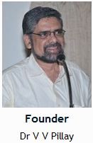

Current Issue
Volume 12; Issue 2
Language: English
Frequency: Semiannual
ISSN:
0973-3558 (Print)
0973-3566 (Electronic)
0973-3558 (Linking)
LCCN: 2013411709
MeSH:
Hazardous Substances/poisoning
Poisoning
Toxicology
Indexed/Abstracted with:
MEDLINE/Index Medicus [through WHO for SEAR]
Indian Science Abstracts
CAB Abstracts
Research Impact Indicator: 0.022 [Indian Citation Index]
NCBI National Library of Medicine ID: 101321567 [Serial]
Dr V V Pillay is the founder of Indian Society of Toxicology and veteran editor of JIST till 2014. Presently he is the treasurer of IST. He is also currently the Chief of Poison Control Centre & Clinical Forensic Unit, and Professor & Head of Forensic Medicine and Medical & Analytical Toxicology in Amrita School of Medicine, (Amrita Vishwa Vidyapeetham), Cochin, Kerala. The Poison Control Centre is recognized by the World Health Organization, and is listed in the Yellowtox Directory of the WHO website.
Dr Pillay obtained his MBBS and MD from Gandhi Medical College, Hyderabad; and has worked in various capacities in medical colleges across South India before settling down in Cochin. He has undergone additional training in forensic immunology, analytical toxicology, and forensic DNA analysis, besides securing a diploma in criminal law. He is one of the few toxicologists from India who has been a Certified Instructor for the Advanced HAZMAT Life Support (AHLS) Course of the American Academy of Clinical Toxicology.
Dr Pillay has numerous publications in scientific journals, of which several are listed in PUBMED. In 1995, he published the first ever Indian textbook devoted to medical toxicology (Modern Medical Toxicology), which has since undergone several editions and reprints, and fetched him the award for Best Indian Author on Toxicology from the Medicolegal Society, AIIMS, New Delhi in 1998. In 2002, he took over as Editor of the 12th edition of the Textbook of Forensic Medicine and Toxicology, which has now entered the 17th edition.
In 2003, Dr. Pillay published the most exhaustive reference book on toxicology ever written by an Indian author (Comprehensive Medical Toxicology), which entered its 2nd edition in 2008, receiving excellent reviews from toxicologists from around the world. The 3rd completely revised edition is due for release in early 2017.
Dr Pillay has also authored other books, including a Handbook of Forensic Medicine and Toxicology for Police Officers in 2006. He has also contributed a chapter each on toxicology for the API Textbook of Medicine, published by the Association of Physicians of India (8th edn, 2008), and the Oxford Textbook of Medicine, published by Oxford University Press, UK (5th edn, 2011).
Dr Pillay is regularly invited as a speaker on various aspects of forensic medicine and toxicology in India and abroad. He is a referee on toxicology for several journals such as the Journal of the Association of Physicians of India (JAPI), for which he won the VR Joshi Best Referee Award in 2006.
In 2004, Dr Pillay founded the Indian Society of Toxicology, of which he was the President for 10 consecutive years. The society brings out a journal, which is a peer-reviewed publication. Dr Pillay was the Editor for 10 years.
In 2007, Dr Pillay was selected as one of the Experts constituted by the UNDP (United Nations Development Programme) and the Ministry of Justice, Govt of India, for modifying and updating the curriculum of forensic medicine and toxicology in India.
He has also been included in the Peer Review Committee of the International Programme on Chemical Safety (IPCS), of the World Health Organization for updating CHEMINFO, the WHO’s software package on poisons, and also for creating a new training manual for Poison Control Centre professionals.
In 2010, Dr Pillay was included among a select committee of 10 experts selected by the Directorate of Forensic Science, Ministry of Home Affairs, Govt of India for the purpose of drafting a Bill on Forensic Science Services.
In 2011, Dr Pillay was selected as a Member for an Expert Panel of the Medical Council of India, constituted for modifying and updating the curriculum of forensic medicine and toxicology.
Dr Pillay was awarded with a Scroll of Honour for ‘Dedicated Teaching Service’ on 20 Nov 2014 by the Govt of Goa, through the Dept of Forensic Medicine, Goa Medical College.
Major Research Interests
- Estimation of pesticide and heavy metal
contamination of vegetables and fruits in Kerala
- Assessment of heavy metal contamination of rivers
and lakes in the industrial regions of Kerala
- Development of economical, accurate diagnostic
analytical methods for detecting poisons in body fluids of poisoned victims
- Development of national protocols on management of
various common poisonings encountered in India
- Development of national protocol on management of
snakebite envenomation
Honors
- Member, Peer Review Committee - International Programme on Chemical Safety - of the World Health Organization, Geneva.
- Representative Member for India , Global Issues in Clinical Toxicology (GICT), Melbourne , Australia
- Member, Expert Panel of Medical Council of India for updating the curriculum of forensic medicine and toxicology
- Member, Expert Committee constituted by the
Directorate of Forensic Science,
Ministry of Home Affairs, Govt of India for drafting a Bill on Forensic Science Service
- Best Indian Author on Medical Toxicology for the
book "Modern Medical Toxicology". Presented by the Medico-Legal Society, All India Institute of
Medical Sciences, New Delhi,
1998.
- Scroll of Honour presented by the Medico-Legal
Society, All India Institute of Medical Sciences, New
Delhi , in 1998, for contribution to the development of Medical
Toxicology in India.
- VR Joshi JAPI Outstanding Referee Award for Toxicology (2006), APICON-2007 – the 62nd National Conference of the Association of Physicians of India, Goa, 2007
- Certified Instructor (2006) for the Advanced Life Support Course of
the American Academy of Clinical Toxicology
- Fellowship of the Indian Congress of Forensic Medicine and
Toxicology - 8th Annual Conference of Indian Congress of
Forensic Medicine & Toxicology, JN Medical College, Belgaum,
Karnataka, 2007.
- Certificate of
Appreciation for Contributions to the Field of Forensic Medicine &
Toxicology – 19th Annual Conference of Karnataka Medicolegal
Society, KS Hegde Medical Academy, Mangalore, Karnataka, 2011.
- Scroll of Honour from Govt of Goa, Dept of Forensic Medicine, Goa Medical College, for ‘Dedicated Teaching Service’ – 2014.